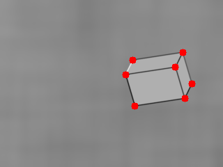
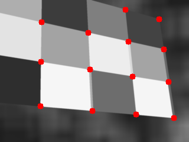
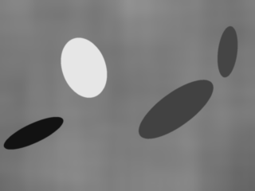

Module silk.datasets.synthetic.shapes
Expand source code
# Copyright (c) Meta Platforms, Inc. and affiliates.
# All rights reserved.
# This source code is licensed under the license found in the
# LICENSE file in the root directory of this source tree.
from typing import Dict, List, Tuple, Union
import numpy as np
from numpy.random.mtrand import RandomState
from silk.datasets.abstract import RandomizedIterable
from silk.logger import LOG
from . import primitives
DEFAULT_BACKGROUND_PARAMS = {
"min_kernel_size": 150,
"max_kernel_size": 500,
"min_rad_ratio": 0.02,
"max_rad_ratio": 0.031,
}
DEFAULT_PRIMITIVE_PARAMS = {
"draw_stripes": {"transform_params": (0.1, 0.1)},
"draw_multiple_polygons": {"kernel_boundaries": (50, 100)},
}
DEFAULT_PROCESSING_PARAMS = {
"resize": [240, 320],
"blur_size": 11,
}
DEFAULT_DRAWING_HEIGHT = 960
DEFAULT_DRAWING_WIDTH = 1280
DEFAULT_HEIGHT = 240
DEFAULT_WIDTH = 320
DEFAULT_BLUR_KERNEL_SIZE = 11
class SyntheticShapes(RandomizedIterable):
r"""Generated dataset that produces synthetic shapes with associated keypoint positions as indicated in the SuperPoint [1] paper.
References
----------
.. [1] DeTone, Daniel, Tomasz Malisiewicz, and Andrew Rabinovich. "Superpoint: Self-supervised interest point detection and description." Proceedings of the IEEE conference on computer vision and pattern recognition workshops. 2018.
Examples
--------
```python
import numpy as np
from skimage import io
from silk.datasets.synthetic import SyntheticShapes
from silk.datasets.synthetic.primitives import draw_interest_points
size = 10
seed = 0
dataset = SyntheticShapes(
seed=seed,
drawing_primitives="all",
)
iterator = iter(dataset)
for i in range(size):
img, points = next(iterator)
img = img.squeeze()
points = points.astype(int)
img_keypoints = draw_interest_points(img, points)
img_keypoints = img_keypoints.astype(np.uint8)
io.imsave(f"doc/images/synthetic_shape_{i}.png", img_keypoints)
```
.. image:: ../../../images/synthetic_shape_1.png
.. image:: ../../../images/synthetic_shape_2.png
.. image:: ../../../images/synthetic_shape_3.png
.. image:: ../../../images/synthetic_shape_4.png
"""
DRAWING_PRIMITIVES = (
"draw_lines",
"draw_polygon",
"draw_multiple_polygons",
"draw_ellipses",
"draw_star",
"draw_checkerboard",
"draw_stripes",
"draw_cube",
"gaussian_noise",
)
@property
def height(self):
return self._height
@property
def width(self):
return self._width
def __init__(
self,
height: int = DEFAULT_HEIGHT,
width: int = DEFAULT_WIDTH,
drawing_primitives: Union[str, List[str]] = "all",
seed: int = 0,
drawing_height: int = DEFAULT_DRAWING_HEIGHT,
drawing_width: int = DEFAULT_DRAWING_WIDTH,
blur_kernel_size: int = DEFAULT_BLUR_KERNEL_SIZE,
background_params: Dict[str, object] = DEFAULT_BACKGROUND_PARAMS,
primitives_params: Dict[str, object] = DEFAULT_PRIMITIVE_PARAMS,
):
"""
Parameters
----------
height : int, optional
height of the generated images, by default DEFAULT_HEIGHT
width : int, optional
width of the generated images, by default DEFAULT_WIDTH
drawing_primitives : Union[str, List[str]], optional
drawing primitives to use, can be "all", "<primitive name>" or list of primitive names (see `SyntheticShapes.DRAWING_PRIMITIVES`), by default "all"
seed : int, optional
random seed used, by default 0
drawing_height : int, optional
height of the image fed to the drawing primitives, by default DEFAULT_DRAWING_HEIGHT
drawing_width : int, optional
width of the image fed to the drawing primitives, by default DEFAULT_DRAWING_WIDTH
blur_kernel_size : int, optional
size of the gaussian blur kernel applied the generated images, by default DEFAULT_BLUR_KERNEL_SIZE
background_params : Dict[str, object], optional
parameters of the background generation (see `primitives.generate_background`), by default DEFAULT_BACKGROUND_PARAMS
primitives_params : Dict[str, object], optional
parameters of all the drawing primitives (see `primitives.draw_*`), by default DEFAULT_PRIMITIVE_PARAMS
"""
super().__init__(seed)
# raise warning in case non-defaults values are provided
default_sizes = (
DEFAULT_DRAWING_HEIGHT,
DEFAULT_DRAWING_WIDTH,
DEFAULT_HEIGHT,
DEFAULT_WIDTH,
)
current_sizes = (drawing_height, drawing_width, height, width)
if current_sizes != default_sizes:
LOG.warning(
f"the provided sizes {current_sizes} to {self.__class__.__name__} differ from the default ones {default_sizes}, "
"please make sure the generated image are correct since this dataset hasn't been heavily tested with non-default sizes"
)
# get set of valid primitives
self.drawing_primitives = SyntheticShapes._parse_drawing_primitives(
drawing_primitives,
)
self._height = height
self._width = width
self._drawing_height = drawing_height
self._drawing_width = drawing_width
self._blur_kernel_size = blur_kernel_size
self._background_params = background_params
self._primitives_params = primitives_params
@staticmethod
def _parse_drawing_primitives(
drawing_primitives: Union[str, List[str]]
) -> Tuple[str]:
if drawing_primitives == "all":
return SyntheticShapes.DRAWING_PRIMITIVES
if isinstance(drawing_primitives, str):
drawing_primitives = [drawing_primitives]
drawing_primitives = set(drawing_primitives)
unknown_drawing_primitives = drawing_primitives - set(
SyntheticShapes.DRAWING_PRIMITIVES
)
if len(unknown_drawing_primitives) > 0:
raise RuntimeError(
f"unknown drawing primitives provided : {unknown_drawing_primitives}"
)
return tuple(drawing_primitives)
def _generate_item(self, random_generator):
"""Generate sequence of synthetic images with associated keypoint positions.
Returns
-------
ndarray, ndarray
the image (HxWx1, Grayscale, float32) and the positions (Nx2, float) of the keypoints
"""
# convert to random state since "primitives.py" doesn't support the new numpy random generator interface
random_state = RandomState(random_generator.bit_generator)
# 1. select random primitive
image = primitives.generate_background(
random_state,
size=(self._drawing_height, self._drawing_width),
**self._background_params,
)
# 2. select & run random drawing primitive
drawing_primitive = random_state.choice(self.drawing_primitives)
points = np.array(
getattr(primitives, drawing_primitive)(
random_state,
image,
**self._primitives_params.get(drawing_primitive, {}),
)
)
points = np.flip(points.astype(np.float32), 1)
# 3. apply gaussian blur
image = primitives._gaussian_blur(image, self._blur_kernel_size)
# 4. resize image
image, points = primitives._resize_image_and_points(
image, points, self._height, self._width
)
return image, pointsClasses
class SyntheticShapes (height: int = 240, width: int = 320, drawing_primitives: Union[str, List[str]] = 'all', seed: int = 0, drawing_height: int = 960, drawing_width: int = 1280, blur_kernel_size: int = 11, background_params: Dict[str, object] = {'min_kernel_size': 150, 'max_kernel_size': 500, 'min_rad_ratio': 0.02, 'max_rad_ratio': 0.031}, primitives_params: Dict[str, object] = {'draw_stripes': {'transform_params': (0.1, 0.1)}, 'draw_multiple_polygons': {'kernel_boundaries': (50, 100)}})-
Generated dataset that produces synthetic shapes with associated keypoint positions as indicated in the SuperPoint [1] paper.
References
.. [1] DeTone, Daniel, Tomasz Malisiewicz, and Andrew Rabinovich. "Superpoint: Self-supervised interest point detection and description." Proceedings of the IEEE conference on computer vision and pattern recognition workshops. 2018.
Examples
import numpy as np from skimage import io from silk.datasets.synthetic import SyntheticShapes from silk.datasets.synthetic.primitives import draw_interest_points size = 10 seed = 0 dataset = SyntheticShapes( seed=seed, drawing_primitives="all", ) iterator = iter(dataset) for i in range(size): img, points = next(iterator) img = img.squeeze() points = points.astype(int) img_keypoints = draw_interest_points(img, points) img_keypoints = img_keypoints.astype(np.uint8) io.imsave(f"doc/images/synthetic_shape_{i}.png", img_keypoints)



Parameters
height:int, optional- height of the generated images, by default DEFAULT_HEIGHT
width:int, optional- width of the generated images, by default DEFAULT_WIDTH
drawing_primitives:Union[str, List[str]], optional- drawing primitives to use, can be "all", "
" or list of primitive names (see SyntheticShapes.DRAWING_PRIMITIVES), by default "all" seed:int, optional- random seed used, by default 0
drawing_height:int, optional- height of the image fed to the drawing primitives, by default DEFAULT_DRAWING_HEIGHT
drawing_width:int, optional- width of the image fed to the drawing primitives, by default DEFAULT_DRAWING_WIDTH
blur_kernel_size:int, optional- size of the gaussian blur kernel applied the generated images, by default DEFAULT_BLUR_KERNEL_SIZE
background_params:Dict[str, object], optional- parameters of the background generation (see
primitives.generate_background), by default DEFAULT_BACKGROUND_PARAMS primitives_params:Dict[str, object], optional- parameters of all the drawing primitives (see
primitives.draw_*), by default DEFAULT_PRIMITIVE_PARAMS
Expand source code
class SyntheticShapes(RandomizedIterable): r"""Generated dataset that produces synthetic shapes with associated keypoint positions as indicated in the SuperPoint [1] paper. References ---------- .. [1] DeTone, Daniel, Tomasz Malisiewicz, and Andrew Rabinovich. "Superpoint: Self-supervised interest point detection and description." Proceedings of the IEEE conference on computer vision and pattern recognition workshops. 2018. Examples -------- ```python import numpy as np from skimage import io from silk.datasets.synthetic import SyntheticShapes from silk.datasets.synthetic.primitives import draw_interest_points size = 10 seed = 0 dataset = SyntheticShapes( seed=seed, drawing_primitives="all", ) iterator = iter(dataset) for i in range(size): img, points = next(iterator) img = img.squeeze() points = points.astype(int) img_keypoints = draw_interest_points(img, points) img_keypoints = img_keypoints.astype(np.uint8) io.imsave(f"doc/images/synthetic_shape_{i}.png", img_keypoints) ``` .. image:: ../../../images/synthetic_shape_1.png .. image:: ../../../images/synthetic_shape_2.png .. image:: ../../../images/synthetic_shape_3.png .. image:: ../../../images/synthetic_shape_4.png """ DRAWING_PRIMITIVES = ( "draw_lines", "draw_polygon", "draw_multiple_polygons", "draw_ellipses", "draw_star", "draw_checkerboard", "draw_stripes", "draw_cube", "gaussian_noise", ) @property def height(self): return self._height @property def width(self): return self._width def __init__( self, height: int = DEFAULT_HEIGHT, width: int = DEFAULT_WIDTH, drawing_primitives: Union[str, List[str]] = "all", seed: int = 0, drawing_height: int = DEFAULT_DRAWING_HEIGHT, drawing_width: int = DEFAULT_DRAWING_WIDTH, blur_kernel_size: int = DEFAULT_BLUR_KERNEL_SIZE, background_params: Dict[str, object] = DEFAULT_BACKGROUND_PARAMS, primitives_params: Dict[str, object] = DEFAULT_PRIMITIVE_PARAMS, ): """ Parameters ---------- height : int, optional height of the generated images, by default DEFAULT_HEIGHT width : int, optional width of the generated images, by default DEFAULT_WIDTH drawing_primitives : Union[str, List[str]], optional drawing primitives to use, can be "all", "<primitive name>" or list of primitive names (see `SyntheticShapes.DRAWING_PRIMITIVES`), by default "all" seed : int, optional random seed used, by default 0 drawing_height : int, optional height of the image fed to the drawing primitives, by default DEFAULT_DRAWING_HEIGHT drawing_width : int, optional width of the image fed to the drawing primitives, by default DEFAULT_DRAWING_WIDTH blur_kernel_size : int, optional size of the gaussian blur kernel applied the generated images, by default DEFAULT_BLUR_KERNEL_SIZE background_params : Dict[str, object], optional parameters of the background generation (see `primitives.generate_background`), by default DEFAULT_BACKGROUND_PARAMS primitives_params : Dict[str, object], optional parameters of all the drawing primitives (see `primitives.draw_*`), by default DEFAULT_PRIMITIVE_PARAMS """ super().__init__(seed) # raise warning in case non-defaults values are provided default_sizes = ( DEFAULT_DRAWING_HEIGHT, DEFAULT_DRAWING_WIDTH, DEFAULT_HEIGHT, DEFAULT_WIDTH, ) current_sizes = (drawing_height, drawing_width, height, width) if current_sizes != default_sizes: LOG.warning( f"the provided sizes {current_sizes} to {self.__class__.__name__} differ from the default ones {default_sizes}, " "please make sure the generated image are correct since this dataset hasn't been heavily tested with non-default sizes" ) # get set of valid primitives self.drawing_primitives = SyntheticShapes._parse_drawing_primitives( drawing_primitives, ) self._height = height self._width = width self._drawing_height = drawing_height self._drawing_width = drawing_width self._blur_kernel_size = blur_kernel_size self._background_params = background_params self._primitives_params = primitives_params @staticmethod def _parse_drawing_primitives( drawing_primitives: Union[str, List[str]] ) -> Tuple[str]: if drawing_primitives == "all": return SyntheticShapes.DRAWING_PRIMITIVES if isinstance(drawing_primitives, str): drawing_primitives = [drawing_primitives] drawing_primitives = set(drawing_primitives) unknown_drawing_primitives = drawing_primitives - set( SyntheticShapes.DRAWING_PRIMITIVES ) if len(unknown_drawing_primitives) > 0: raise RuntimeError( f"unknown drawing primitives provided : {unknown_drawing_primitives}" ) return tuple(drawing_primitives) def _generate_item(self, random_generator): """Generate sequence of synthetic images with associated keypoint positions. Returns ------- ndarray, ndarray the image (HxWx1, Grayscale, float32) and the positions (Nx2, float) of the keypoints """ # convert to random state since "primitives.py" doesn't support the new numpy random generator interface random_state = RandomState(random_generator.bit_generator) # 1. select random primitive image = primitives.generate_background( random_state, size=(self._drawing_height, self._drawing_width), **self._background_params, ) # 2. select & run random drawing primitive drawing_primitive = random_state.choice(self.drawing_primitives) points = np.array( getattr(primitives, drawing_primitive)( random_state, image, **self._primitives_params.get(drawing_primitive, {}), ) ) points = np.flip(points.astype(np.float32), 1) # 3. apply gaussian blur image = primitives._gaussian_blur(image, self._blur_kernel_size) # 4. resize image image, points = primitives._resize_image_and_points( image, points, self._height, self._width ) return image, pointsAncestors
- RandomizedIterable
- torch.utils.data.dataset.IterableDataset
- torch.utils.data.dataset.Dataset
- typing.Generic
Class variables
var DRAWING_PRIMITIVES
Instance variables
var height-
Expand source code
@property def height(self): return self._height var width-
Expand source code
@property def width(self): return self._width
Inherited members